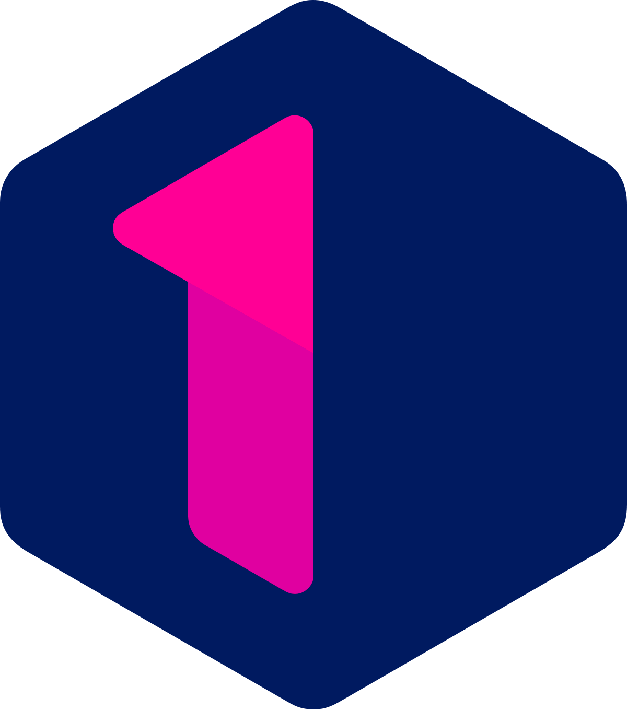

Odigia
“Wanneer je verdrietig bent, blik dan opnieuw in je hart en je zult zien dat je weent om wat je vreugde schonk” - Khalil Gibran -
Is onlangs of wat langer geleden een dierbaar iemand je ontvallen en wil je graag andere rouwenden ontmoeten?
Wees dan van harte welkom.
In een kleine groep luisteren we naar mekaars verhaal.
Griet en Ilse willen je graag hierin ondersteunen.
Het verdriet om het gemis, de vragen, de vertwijfeling, de pijn, het mag er allemaal zijn.
Emoties die ruimte krijgen en geuit mogen worden, ervaren we als lichter om te dragen.
We gaan samen op zoek naar die kracht die in ieder van ons schuilt.
Eenvoudige oefeningen, ademtechnieken en korte meditaties helpen ons hierbij.
Voel je vrij om te delen wat je roert of om in stilte aanwezig te zijn als dat beter voelt
Wanneer: Op zondag 5 september of zondag 26 september,
telkens van 14 tot 17.30 uur
Bijdrage: 38€
Voor meer inlichtingen en inschrijvingen: ilse@dichtbijafscheid.be - tel 0476/514840
griet.dekeyser@gmail.com - www.grietdekeyser.nu - tel 0495/843252
Vroeg of laat wordt iedereen in zijn leven geconfronteerd met verlies.
Als voorganger/ritueelbegeleider help ik mensen op pad om vorm te geven aan dat laatste intieme samen-zijn met hun dierbare. Dit kan in de vorm van een afscheidsviering (een burgerlijke uitvaart bijvoorbeeld) maar ook tal van andere afscheidsrituelen zijn mogelijk.
Naast ritueelbegeleider ben ik ook rouwtherapeut.
Ingrijpende verliezen kunnen je verhinderen je leven verder te
zetten.
Rouwen begint met je realiseren dat er een verlies is, het erkennen
van je verlies. Een waaier van intense en soms verwarrende emoties
kunnen je hierbij overspoelen. Rouwen heeft tot doel
verlieservaringen te integreren in onze identiteit. Bestaansrecht
geven aan ons verlies maakt ons terug ‘ontmoetbaar’ voor onszelf en
voor anderen. Het is dan ook helend wanneer je deze emoties en
gevoelens kunt delen met iemand die zonder oordeel en met zachtheid
naar jou kan luisteren. Rouwen is een uniek proces dat eenieder op
zijn/haar manier beleeft. Verlies en verdriet dat bewust ervaren en
geuit mag worden, geeft ruimte en wordt lichter om te dragen.
Lukt het je niet in je eentje dan ben je altijd welkom om er een keer met mij over te komen praten. Samen gaan we dan op zoek naar balans, een nieuw levensperspectief en een versterkt zelfbewustzijn.
‘Verbinding’ is de rode draad in mijn leven en toont zich in alles wat ik doe. In 2011 en 2012 verdiepte ik mij in NVC, Non-Violent-Communication (niet oordelend luisteren vanuit je hart). Toen ik in 2013 een opleiding ‘rouwbegeleiding’ volgde, vielen vele puzzelstukjes op zijn plaats. Sinds enkele jaren begeleid ik mensen in hun rouwproces, zowel individueel als in groep. Mijn oprechte belangstelling in de mens en mijn sterk empathisch vermogen helpen mij hierbij. Ik voel me dankbaar met deze levensmissie.
Als rouwtherapeut verplaats ik mij in de regio van Antwerpen-Kapellen-Kalmthout-Essen-Brasschaat-Wuustwezel en omstreken. U kan me ook steeds opzoeken in mijn praktijk te Kalmthout.
Zijn 1 op 1 gesprekken soms wat confronterend, dan is een wandeling op de Kalmthoutse heide voor jou misschien een mogelijkheid om tot een dieper gesprek te komen.
Praten met lotgenoten kan deugd doen. Men voelt zich gezien en gedragen door de groepsdynamiek. Men ontmoet andere rouwenden wat vaak als helend ervaren wordt. (max. 10 pers per groep - dus tijdig inschrijven). 3X per jaar wordt er een lotgenotengroep opgestart. Voor meer inlichtingen en data mag je mij altijd contacteren.

Ilse Vanderheyden
1968 - vrouw – moeder – partner – rouwtherapeut – voorganger – ritueelbegeleider - verbindend - zorgzaam – integer – zoekend
Rouwen bij euthanasie: ‘Dat de patiënt vrede heeft met zijn levenseinde, is voor nabestaanden vaak een geruststellende gedachte’
Komen te gaan: Aflevering 2